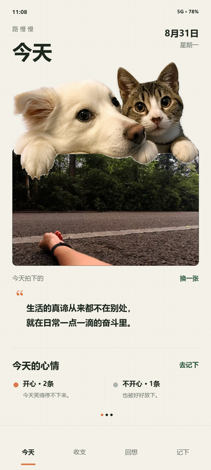

<div id="lumanman-today-exact-v1" aria-label="路慢慢今天页面设计稿，使用用户指定猫狗原图">
  
</div>

<style>
  #lumanman-today-exact-v1 {
    display: grid;
    place-items: center;
    width: 100%;
    padding: 8px 0;
    background: transparent;
  }
  #lumanman-today-exact-v1 img {
    display: block;
    width: min(360px, 100%);
    height: auto;
    border-radius: 27px;
    box-shadow: 0 22px 68px rgba(37, 51, 40, 0.18), 0 2px 8px rgba(37, 51, 40, 0.08);
  }
</style>
